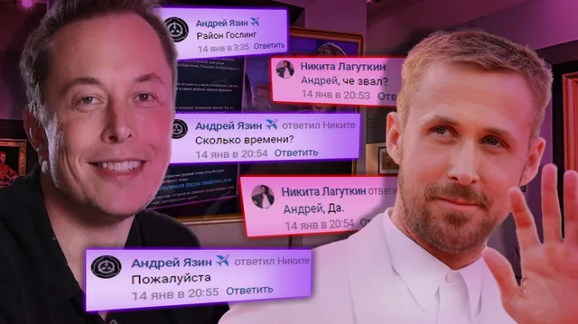
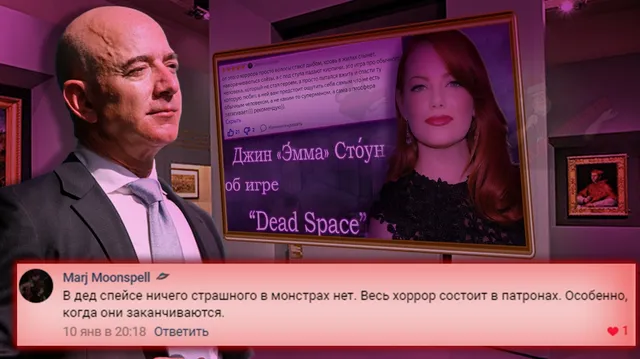
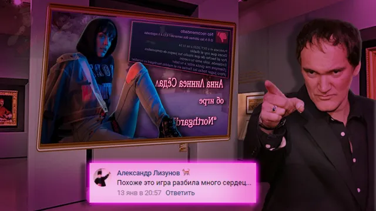
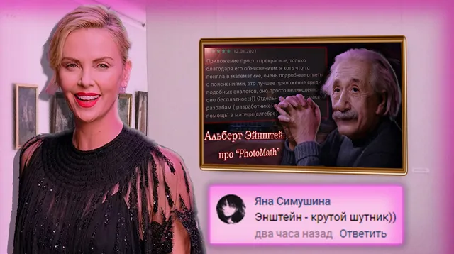

Ваши комментарии
ВКонтакте
Предыдущий выпуск - [https://vk.com/wall-196461758_3229|здесь]
17 января 2021 · оригинал во ВКонтакте ↗
![Предыдущий выпуск - [https://vk.com/wall-196461758_3229|здесь]](../img/vk/1031_1t.webp)




🌌 Вот прошла еще одна неделя новой декады, а с уходом недели приходит рубрика ваших комментариев, дорогие, приятного лицезрения!
🎭 [https://vk.com/@criticssteam-sistema-titulov?ref=group_block|Титул] Комментатора сегодня получают:
💛 [id599198250|Яна Симушина]
🌟 [id347679904|Андрей Язин]
🌟 [id284440935|Никита Лагуткин]
🌟 [id12840761|Александр Лизунов]
⭐ [id371395846|Marj Moonspell]
==============================
>Всем спасибо, но писаит нужно больше.
#ВашиКомментарии@criticssteam - №27
»Предыдущий выпуск - [https://vk.com/wall-196461758_3229|здесь]
>Подписаться на [https://vk.com/criticssteam?w=app5748831_-196461758|рассылку]
🎭 [https://vk.com/@criticssteam-sistema-titulov?ref=group_block|Титул] Комментатора сегодня получают:
💛 [id599198250|Яна Симушина]
🌟 [id347679904|Андрей Язин]
🌟 [id284440935|Никита Лагуткин]
🌟 [id12840761|Александр Лизунов]
⭐ [id371395846|Marj Moonspell]
==============================
>Всем спасибо, но писаит нужно больше.
#ВашиКомментарии@criticssteam - №27
»Предыдущий выпуск - [https://vk.com/wall-196461758_3229|здесь]
>Подписаться на [https://vk.com/criticssteam?w=app5748831_-196461758|рассылку]